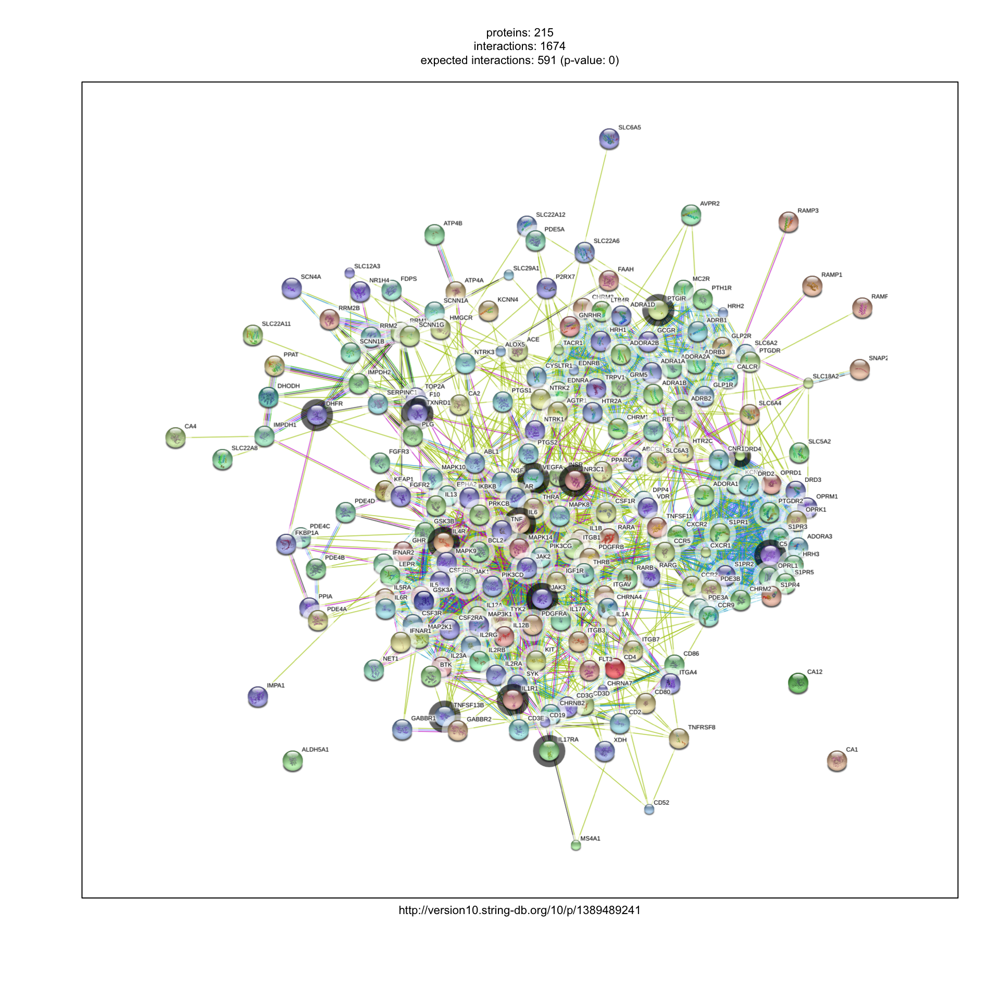
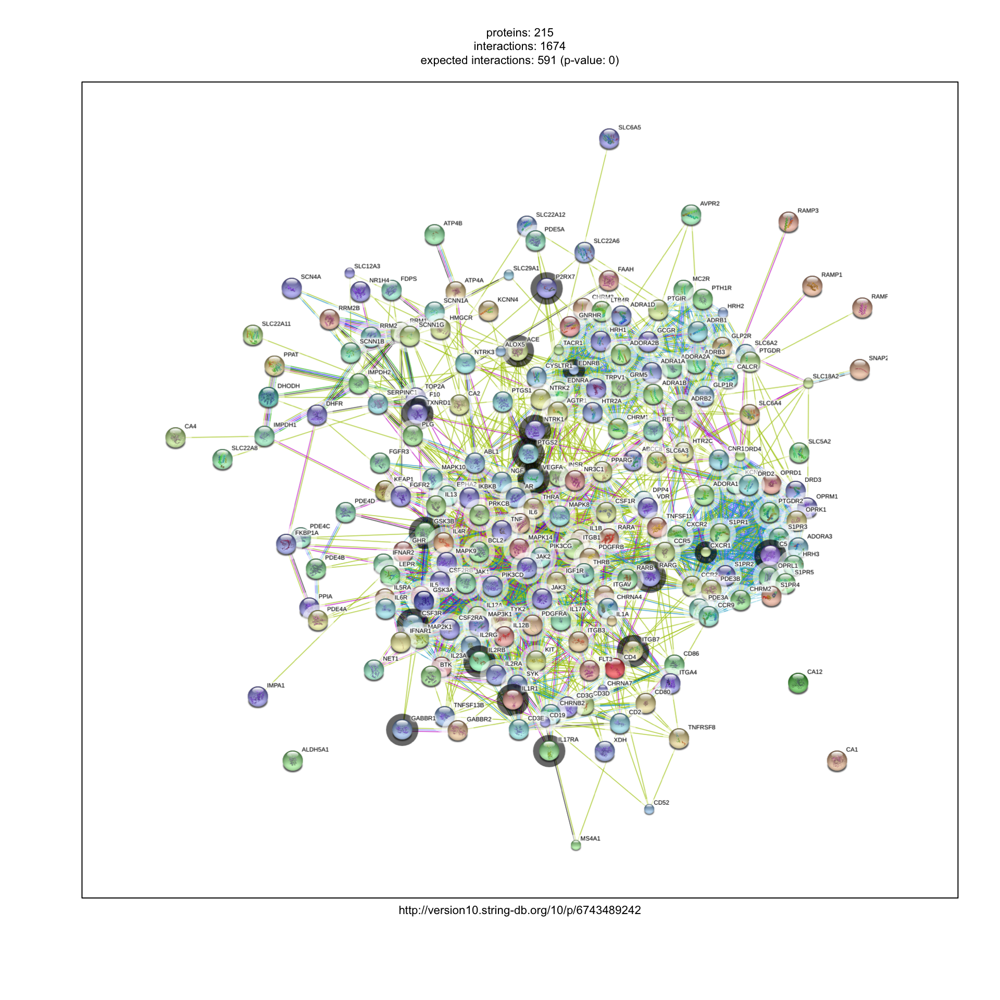
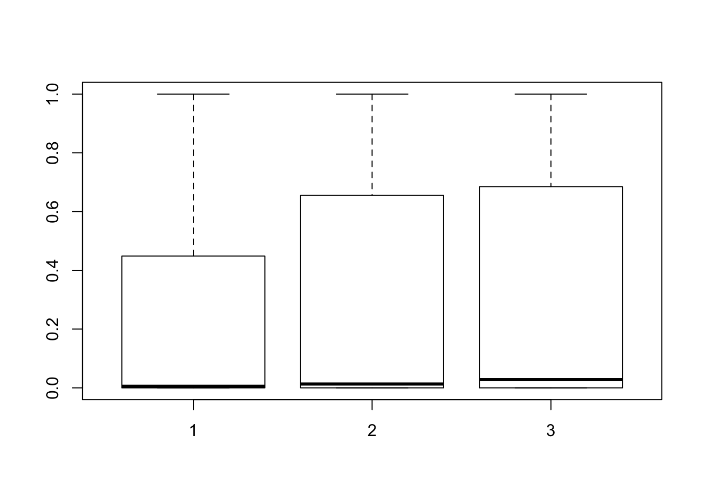

Last updated: 2019-11-23
workflowr checks: (Click a bullet for more information) ✖ R Markdown file: uncommitted changes
The R Markdown is untracked by Git. To know which version of the R Markdown file created these results, you’ll want to first commit it to the Git repo. If you’re still working on the analysis, you can ignore this warning. When you’re finished, you can run wflow_publish to commit the R Markdown file and build the HTML.
✔ Environment: empty
Great job! The global environment was empty. Objects defined in the global environment can affect the analysis in your R Markdown file in unknown ways. For reproduciblity it’s best to always run the code in an empty environment.
✔ Seed:
set.seed(20190721)
The command set.seed(20190721) was run prior to running the code in the R Markdown file. Setting a seed ensures that any results that rely on randomness, e.g. subsampling or permutations, are reproducible.
✔ Session information: recorded
Great job! Recording the operating system, R version, and package versions is critical for reproducibility.
✔ Repository version: 47185fd
wflow_publish or wflow_git_commit). workflowr only checks the R Markdown file, but you know if there are other scripts or data files that it depends on. Below is the status of the Git repository when the results were generated:
Ignored files:
Ignored: .DS_Store
Ignored: .Rhistory
Ignored: .Rproj.user/
Ignored: docs/.DS_Store
Untracked files:
Untracked: analysis/band_prec_robocov.Rmd
Untracked: analysis/gtex_predictive_robocov.Rmd
Untracked: analysis/gtex_robocov.Rmd
Untracked: analysis/gtex_robocov_ex_robospan.Rmd
Untracked: analysis/hub_robocov.Rmd
Untracked: analysis/robocov_blood_compare.Rmd
Untracked: analysis/robospan_blood_compare.Rmd
Untracked: analysis/summary_correlation_structure.Rmd
Untracked: analysis/supp_figure_simulation.Rmd
Untracked: analysis/toeplitz_robocov.Rmd
Untracked: code/ robocov_sim.R
Untracked: code/band_prec_sim.R
Untracked: code/gene_score_all_strategies.R
Untracked: code/gtex_robocov.R
Untracked: code/gtex_robocov_precision.R
Untracked: code/hub_sim.R
Untracked: code/hub_sim_sparse.R
Untracked: code/maxHiCgene.R
Untracked: code/meta_enrich.R
Untracked: code/meta_single_enrich.R
Untracked: code/postprocess_hub_toeplitz.R
Untracked: code/robocov_gtex.R
Untracked: code/robocov_gtex_blood.R
Untracked: code/robocov_gtex_brain.R
Untracked: code/single_tau_star.R
Untracked: code/toeplitz_sim.R
Untracked: code/toeplitz_sim_sparse.R
Untracked: data/Gene_Scores/
Untracked: data/Robocov_Box_all_genes.rda
Untracked: data/gene_names_GTEX_V6.txt
Untracked: data/housekeeping_genes.txt
Untracked: data/person_tissue_genes_voom.rda
Untracked: docs/figure/
Untracked: draft/
Untracked: output/Cor_pairwise_all_genes.rda
Untracked: output/Robocov_all_genes.rda
Untracked: output/gtex_predictive_robocov.rda
Untracked: output/output_sparse/
Untracked: output/robocov_sim_bandprec_n_100_p_100_prop_0.25.rda
Untracked: output/robocov_sim_bandprec_n_100_p_100_prop_0.5.rda
Untracked: output/robocov_sim_bandprec_n_100_p_100_prop_0.rda
Untracked: output/robocov_sim_bandprec_n_200_p_100_prop_0.25.rda
Untracked: output/robocov_sim_bandprec_n_200_p_100_prop_0.5.rda
Untracked: output/robocov_sim_bandprec_n_200_p_100_prop_0.rda
Untracked: output/robocov_sim_bandprec_n_50_p_100_prop_0.25.rda
Untracked: output/robocov_sim_bandprec_n_50_p_100_prop_0.5.rda
Untracked: output/robocov_sim_bandprec_n_50_p_100_prop_0.rda
Untracked: output/robocov_sim_hub_n_100_p_100_prop_0.25.rda
Untracked: output/robocov_sim_hub_n_100_p_100_prop_0.5.rda
Untracked: output/robocov_sim_hub_n_100_p_100_prop_0.rda
Untracked: output/robocov_sim_hub_n_200_p_100_prop_0.25.rda
Untracked: output/robocov_sim_hub_n_200_p_100_prop_0.5.rda
Untracked: output/robocov_sim_hub_n_200_p_100_prop_0.75.rda
Untracked: output/robocov_sim_hub_n_200_p_100_prop_0.rda
Untracked: output/robocov_sim_hub_n_50_p_100_prop_0.25.rda
Untracked: output/robocov_sim_hub_n_50_p_100_prop_0.rda
Untracked: output/robocov_sim_toeplitz_n_100_p_100_prop_0.25.rda
Untracked: output/robocov_sim_toeplitz_n_100_p_100_prop_0.5.rda
Untracked: output/robocov_sim_toeplitz_n_100_p_100_prop_0.rda
Untracked: output/robocov_sim_toeplitz_n_200_p_100_prop_0.25.rda
Untracked: output/robocov_sim_toeplitz_n_200_p_100_prop_0.5.rda
Untracked: output/robocov_sim_toeplitz_n_200_p_100_prop_0.rda
Untracked: output/robocov_sim_toeplitz_n_50_p_100_prop_0.25.rda
Untracked: output/robocov_sim_toeplitz_n_50_p_100_prop_0.5.rda
Untracked: output/robocov_sim_toeplitz_n_50_p_100_prop_0.rda
library(readxl)Warning: package 'readxl' was built under R version 3.5.2We compare Robospan-All and Robospan-Blood with other gene scores specific to blood or blood related traits.
robospan_all = read.table("/Users/kushaldey/Documents/Robocov-pages/data/Gene_Scores/Robospan_mean.txt")
seg_blood = read.table("/Users/kushaldey/Documents/Robocov-pages/data/Gene_Scores/Fin_GTEx_WholeBlood.txt")
robospan_blood = read.table("/Users/kushaldey/Documents/Robocov-pages/data/Gene_Scores/Robospan_Mean_Blood.txt")
gene_names_gtex = as.character(read.table("/Users/kushaldey/Documents/Robocov-pages/data/Gene_Scores/ensembl_and_hgnc_symbols.txt")[,2])The overlap between the two scores: SEG-GTEx-Blood and Robospan-All is quite weak. Evidence below
temp = intersect(robospan_all[,1], seg_blood[,1])
length(temp)/length(robospan_all[,1])[1] 0.086875length(temp)/length(seg_blood[,1])[1] 0.07009581Slightly higher overlap of SEG-GTEx-Blood with Robospan-Blood but not super-high enrichment.
temp = intersect(robospan_blood[,1], seg_blood[,1])
length(temp)/length(robospan_blood[,1])[1] 0.124375length(temp)/length(seg_blood[,1])[1] 0.100353We remove SEG-GTEx-Blood genes from Robospan-All genes.
temp = setdiff(robospan_all[,1], seg_blood[,1])
write.table(temp, file = "/Users/kushaldey/Documents/Robocov-pages/data/Gene_Scores/Robospan_all_comple_SEG_blood.txt",
row.names = F, col.names = F, quote = F, sep = "\t")library(STRINGdb)
string_db <- STRINGdb$new(version="10", species=9606,
score_threshold=400, input_directory="")pi_drug_targets = data.frame(read_excel("/Users/kushaldey/Documents/Mouse_Humans/data/Pi_approved_drug_targets.xlsx"))New names:
* `` -> ...3test_genes = unique(pi_drug_targets[-1,4])
df = data.frame(test_genes)
ll <- string_db$map(df, "test_genes", removeUnmappedRows = TRUE )Warning: we couldn't map to STRING 0% of your identifierscolors = rep("#FFFFFF", nrow(ll))
colors[match(intersect(robospan_all[,1], ll$test_genes), ll$test_genes)] = "#000000"
colors = as.factor(colors)
payload_id <- string_db$post_payload( ll$STRING_id,
colors)
string_db$plot_network(ll$STRING_id, payload_id=payload_id, required_score = 400)
pi_drug_targets = data.frame(read_excel("/Users/kushaldey/Documents/Mouse_Humans/data/Pi_approved_drug_targets.xlsx"))New names:
* `` -> ...3test_genes = unique(pi_drug_targets[-1,4])
df = data.frame(test_genes)
ll <- string_db$map(df, "test_genes", removeUnmappedRows = TRUE )Warning: we couldn't map to STRING 0% of your identifierscolors = rep("#FFFFFF", nrow(ll))
colors[match(intersect(robospan_blood[,1], ll$test_genes), ll$test_genes)] = "#000000"
colors = as.factor(colors)
payload_id <- string_db$post_payload( ll$STRING_id,
colors)
string_db$plot_network(ll$STRING_id, payload_id=payload_id, required_score = 400)
length(intersect(ll$test_genes, robospan_all[,1]))/length(intersect(ll$test_genes, gene_names_gtex))/(1600/14000)[1] 1.104369length(intersect(ll$test_genes, robospan_blood[,1]))/length(intersect(ll$test_genes, gene_names_gtex))/(1600/14000)[1] 1.444175The genes from Robospan-all and Robospan-Blood are not enriched in the approved drug targets. We also compare with PPI-Enhancer and Master regulator genes
master_reg = read.table("/Users/kushaldey/Documents/Mouse_Humans/data/Gene_Scores/master_regulator_genes_Nov11.txt")
ppi_enhancer = read.table("/Users/kushaldey/Documents/Mouse_Humans/data/RWR_Gene_Scores/RWR_SEG_ABC_HOMOD_EDS.txt")
dim(master_reg)[1] 2058 2dim(ppi_enhancer)[1] 2200 2length(intersect(master_reg[,1], robospan_blood[,1]))/length(intersect(master_reg[,1], gene_names_gtex))/ (1600/14000)[1] 1.402482length(intersect(ppi_enhancer[,1], robospan_blood[,1]))/length(intersect(ppi_enhancer[,1], gene_names_gtex))/ (1600/14000)[1] 1.354549Agsin we did not see very high enrichment of these Robospan-Blood and Robospan-All genes with either PPI-Enhancer or Master-Regulator genes.
This suggests that Robospan scoring scheme is capturingn biologically relevant gene sets orthogonal to either Enhancer-regulated genes or Master-regulator genes.
The enriched pathways for Robospan-All genes are
The enriched pathways for Robospan-Blood genes are
We next load the list of housekeeping genes.
housekeep = read.table("/Users/kushaldey/Documents/Robocov-pages/data/housekeeping_genes.txt")length(intersect(housekeep[,1], robospan_all[,1]))/length(intersect(housekeep[,1], gene_names_gtex))/ (1600/14000)[1] 0.8674004length(intersect(housekeep[,1], robospan_blood[,1]))/length(intersect(housekeep[,1], gene_names_gtex))/ (1600/14000)[1] 0.9643606Again only moderate enrichment of signal among the house-keeping genes.
Next we evaluate constraints on Robospan-All and Robospan-Blood genes.
pLI_df = read.table("/Users/kushaldey/Documents/Mouse_Humans/data/Gene_Scores/pLI_genes.txt")
boxplot(pLI_df[match(intersect(robospan_all[,1], pLI_df[,1]), pLI_df[,1]), 2],
pLI_df[match(intersect(robospan_blood[,1], pLI_df[,1]), pLI_df[,1]), 2],
pLI_df[,2])
pLI_high = pLI_df[which(pLI_df[,2] > 0.99), 1]
length(intersect(pLI_high, robospan_all[,1]))/length(intersect(pLI_high, gene_names_gtex))/ (1600/14000)[1] 0.4776201length(intersect(pLI_high, robospan_blood[,1]))/length(intersect(pLI_high, gene_names_gtex))/ (1600/14000)[1] 0.6113537pLI_low = pLI_df[which(pLI_df[,2] < 1e-08), 1]
length(intersect(pLI_low, robospan_all[,1]))/length(intersect(pLI_low, gene_names_gtex))/ (1600/14000)[1] 1.396915length(intersect(pLI_low, robospan_blood[,1]))/length(intersect(pLI_low, gene_names_gtex))/ (1600/14000)[1] 1.156954TF_genes = read.table("/Users/kushaldey/Documents/Mouse_Humans/data/Gene_Scores/TF_genes_curated.txt")
length(intersect(TF_genes[,1], robospan_all[,1]))/length(TF_genes[,1])/ (1600/14000)[1] 0.6459732length(intersect(TF_genes[,1], robospan_blood[,1]))/length(TF_genes[,1])/(1600/14000)[1] 0.549878So, far we have not seen that much of a high enrichment of the known gene sets with the Robospan scores; which is interesting. So what is this unique feature that is captured by these scores?
sessionInfo()R version 3.5.1 (2018-07-02)
Platform: x86_64-apple-darwin15.6.0 (64-bit)
Running under: macOS High Sierra 10.13.6
Matrix products: default
BLAS: /Library/Frameworks/R.framework/Versions/3.5/Resources/lib/libRblas.0.dylib
LAPACK: /Library/Frameworks/R.framework/Versions/3.5/Resources/lib/libRlapack.dylib
locale:
[1] en_US.UTF-8/en_US.UTF-8/en_US.UTF-8/C/en_US.UTF-8/en_US.UTF-8
attached base packages:
[1] stats graphics grDevices utils datasets methods base
other attached packages:
[1] STRINGdb_1.22.0 readxl_1.3.0
loaded via a namespace (and not attached):
[1] Rcpp_1.0.1 pillar_1.3.1 cellranger_1.1.0
[4] compiler_3.5.1 RColorBrewer_1.1-2 git2r_0.23.0
[7] plyr_1.8.4 workflowr_1.1.1 R.methodsS3_1.7.1
[10] bitops_1.0-6 R.utils_2.7.0 tools_3.5.1
[13] digest_0.6.19 bit_1.1-14 tibble_2.1.1
[16] evaluate_0.12 RSQLite_2.1.1 memoise_1.1.0
[19] rlang_0.3.4 pkgconfig_2.0.2 png_0.1-7
[22] igraph_1.2.4 DBI_1.0.0 yaml_2.2.0
[25] proto_1.0.0 stringr_1.4.0 knitr_1.20
[28] gtools_3.8.1 caTools_1.17.1.1 rprojroot_1.3-2
[31] bit64_0.9-7 sqldf_0.4-11 plotrix_3.7-5
[34] hash_2.2.6.1 rmarkdown_1.10 gsubfn_0.7
[37] gdata_2.18.0 blob_1.1.1 magrittr_1.5
[40] whisker_0.3-2 backports_1.1.4 gplots_3.0.1.1
[43] htmltools_0.3.6 KernSmooth_2.23-15 stringi_1.4.3
[46] RCurl_1.95-4.11 crayon_1.3.4 chron_2.3-53
[49] R.oo_1.22.0 This reproducible R Markdown analysis was created with workflowr 1.1.1